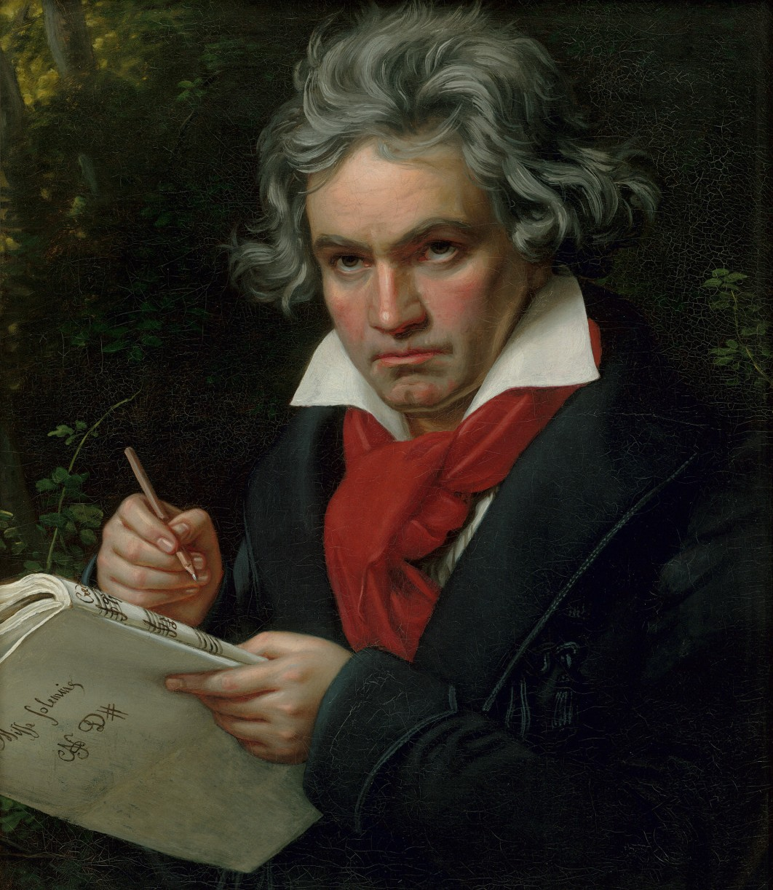

Fur Elise/Para Elisa
Beethoven fue conocido por ser el mejor compositor de su época en Alemania, su fama también fue de que a pesar de su sordera no lo detuvo y pudo componer Ode to joy. También fue conocido como la "Bestia" debido a que tenía un carácter muy fuerte.
